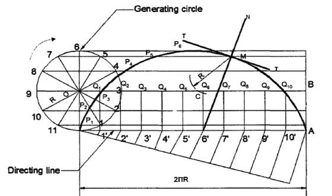

SPECIAL CURVES
CYCLOIDAL CURVES:
Cycloidal curves are generated by a fixed point in the circumference of a circle when it rolls without slipping along a fixed straight line or circular path. The rolling circle is called the generating circle, the fixed straight line, the directing line and the fixed circle, the directing circle.
In physical world, cycloidal curves are used as cycloidal gears, epicyclic train dynamometer, epicyclic gear train, hypocycloid engine.
CYCLOID:
A cycloid is a curve generated by a fixed point on the circumference of a circle, when it rolls without slipping along a straight line.
§ To draw a cycloid, given the radius R of the generating circle.
Construction:
1. With centre O and radius R, draw the given generating circle.
2. Assuming point P to be the initial position of the generating point, draw a line PA, tangential and equal to the circumference of the circle.
3. Divide the line PA and the circle into the same number of equal parts and nuber the points.
4. Draw the line OB, parallel and equal to PA. OB is the locus of the centre of the generating circle.
5. Erect perpendiculars at 1' ,2',3', etc., meeting OB at O1, O2,O3 etc.
6. Through the points 1,2,3 etc., draw lines parallel to PA.
7. With centre O, and radius R, draw an arc intersecting the line through 1 at P1, P1 is the position of the generating point, when the centre of the generating circle moves to O1.
8. Similarly locate the points P2, P3 etc.
9. A smooth curve passing through the points P,P1, P2,P3 etc., is the required cycloid.

Figure.